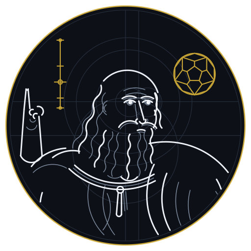

Plato¶

Plato of Athens (c. 427–347 BCE) placed geometry at the threshold of philosophy—not as a craft of mere measurement, but as the dialectical discipline that trains the soul to move from visible figures to intelligible proportion, limit, and unity. This digital edition gathers the foundational mathematical and geometric dialogues across fourteen Stephanus passages, pairing John Burnet’s Oxford Classical Texts Greek with Benjamin Jowett’s 1892 translation, step-by-step argumentative summaries, and interactive vector diagrams.
Books in This Collection¶
Dialogue · Stephanus 75d–87b · 3 Passages · 4 Tracks
Meno — Socrates defines figure as the limit of solid (75d–76a), guides the slave boy to double a square by constructing a new square upon its diagonal (82b–85b), and introduces the geometer’s method of hypothesis (86e–87b).
Dialogue · Stephanus 147d–148b · 1 Passage · 4 Tracks
Theaetetus — Theodorus of Cyrene constructs geometric lines whose squares span from 3 to 17 square feet, prompting young Theaetetus to classify rational lengths (mēkē) and incommensurable powers (dynameis).
Dialogue · Books VI–VIII · 3 Passages · 4 Tracks
Republic — The proportional Divided Line bridges visible image and intelligible form (509d–511e), the Quadrivium and stereometry chart the mathematical ascent of the soul (522c–534e), and the geometric Nuptial Number closes Book VIII’s cosmic cycle (546b–d).
Dialogue · Stephanus 31b–56c · 2 Passages · 4 Tracks
Timaeus — Timaeus of Locri weaves the World-Soul from geometric, harmonic, and arithmetic means into a 34-pitch diatonic scale (31b–36d), then assembles the four elements and cosmos from elementary right triangles into the five regular polyhedra (53c–56c).
Thematic Anthology · 5 Passages · 4 Tracks
Dialogues on Measure & Proportion — Late dialogues probing the optical definition of straightness and roundness in Parmenides (137d–138a, 145a–b), Limit (peras) and pure geometric beauty in Philebus (16c–26d, 51b–52c), and linear, planar, and solid incommensurability in Laws VII (817e–820d).
Key Features¶
Four Synchronized Tracks
Every passage aligns verbatim Burnet Greek (Oxford Classical Texts), Jowett’s 1892 English translation, structural summaries, and mathematical-philological notes calibrated to exact Stephanus a–e markers.
Interactive Vector Diagrams
Explore calibrated .euclid-graphic reconstructions of Meno’s doubled square, Theodorus’s surd spiral, the Divided Line, Timaeus’s World-Soul means and triangles, and the compass of Limit.
58 Cross-Corpus Citations
Follow Plato’s mathematical terminology and propositions across Euclid’s Elements, Proclus’s Commentary, Aristotle, Pacioli, and Hoenen through the Master Stephanus Concordance.
Reference & Project¶
Scholarly Apparatus
Master Stephanus Concordance — Cross-corpus reconciliation of all 58 Platonic mathematical citations
Glossary — Polytonic Greek, Scholastic Latin, and geometric lexicon
People & Bibliography — Biographical profiles and critical editions (Burnet OCT, Jowett)
About This Project
About & Burnet & Jowett — Editorial scope and textual witnesses
Using This Edition & Symbolic Demos — Navigation guide and exact SymPy constructions in
geometor.platoLog, Changelog, & Modules — Development notes, release history, and Python API